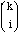
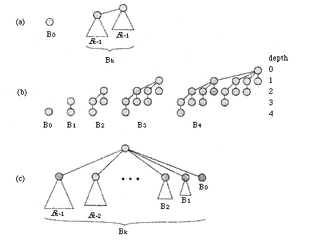
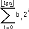
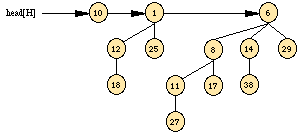
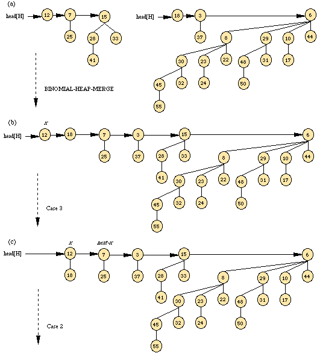
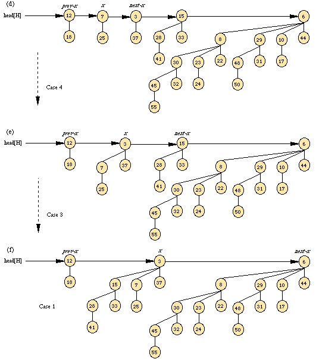
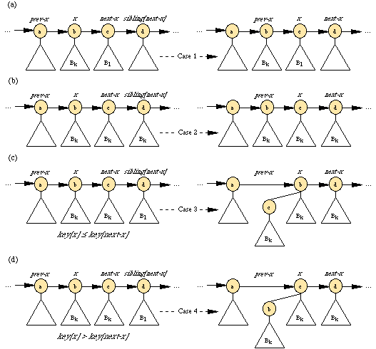
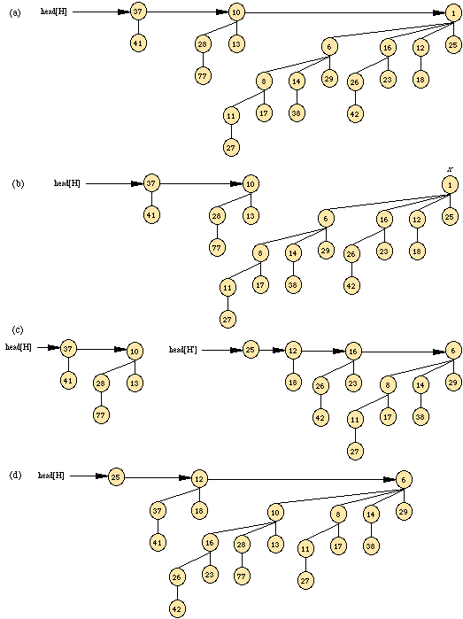

are the binomial coefficients.
are the binomial coefficients.A Binomial heap is a collection of binomial trees, so this section starts by defining binomial trees and proving some key properties. We then define binomial heaps and show how they can be represented.
The binomial tree Bk is an ordered tree defined recursively. As shown in Figure 1(a), the binomial tree B0 consists of a single node. The binomial tree Bk consists of two binomial trees Bk-1 that are linked together: the root of one is the leftmost child of the root of the other. Figure 1(b) shows the binomial trees B0 through B4.
Some properties of binomial trees are given by the following lemma.
Lemma 1 (Properties of binomial trees)
For the binomial tree Bk,

nodes at depth i for i = 0,1,... ,k, andCorollary 2
The maximum degree of any node in an n-node binomial tree is lg n.
The term "binomial tree" comes from property 3 of Lemma 1, since the terms
are the binomial coefficients.
A binomial heap H is a set of binomial trees that satisfies the following binomial-heap properties.

The second property implies that an n-node binomial heap H consists of at most lg n + 1 binomial trees. To see why, observe that the binary representation of n has lg n + 1 bits, say (blg n, blg n-1, ..., b0) , so that n =

. By property 1 of Lemma 1, therefore, binomial tree Bi appears in H if and only if bit bi = 1. Thus, binomial heap H contains at most lg n + 1 binomial trees.Figure 2 shows a binomial heap H with 13 nodes. The binary representation of 13 is (1101), and H consists of heap-ordered binomial trees B3, B2, and B0, having 8, 4, and 1 nodes respectively, for a total of 13 nodes.
As Figure 2 also shows, the roots of the binomial trees within a binomial heap are organized in a linked list, which we refer to as the root list. The degrees of the roots strictly increase as we traverse the root list. By the second binomial-heap property, in an n-node binomial heap the degrees of the roots are a subset of {0, 1, ... lg n }. The sibling field has a different meaning for roots than for nonroots. If x is a root, then sibling[x] points to the next root in the root list. (As usual, sibling[x] = NIL if x is the last root in the root list.)

A given binomial heap H is accessed by the field head[H], which is simply a pointer to the first root in the root list of H. If binomial heap H has no elements, then head[H] = NIL.
Binomial heaps support the following operations:
MAKE-HEAP() creates and returns a new heap containing no elements.
INSERT(H, x) inserts node x, whose key field has already been filled in, into heap H.
MINIMUM(H) returns a pointer to the node in heap H whose key is minimum.
EXTRACT-MIN(H) deletes the node from heap H whose key is minimum, returning a pointer to the node.
UNION(H1, H2) creates and returns a new heap that contains all the nodes of heaps H1 and H2. Heaps H1 and H2 are "destroyed" by this operation.
Binary heap Binomial heap Procedure (worst-case) (worst-case) MAKE-HEAP (1) (1) INSERT (lg n) O(lg n) MINIMUM (1) O(lg n) EXTRACT-MIN (lg n) (lg n) UNION (n) O(lg n)
As the table in Figure 3 shows, if we don't need the UNION operation, ordinary binary heaps, as used in heapsort, work well. Operations other than UNION run in worst-case time O(lg n)--or better--on a binary heap. If the UNION operation must be supported, however, binary heaps perform poorly. By concatenating the two arrays that hold the binary heaps to be merged and then running HEAPIFY, the UNION operation takes (n) time in the worst case.
In this chapter, we shall examine "binomial heaps," whose worst-case time bounds are also shown in Figure 3. In particular, the UNION operation takes only O(lg n) time to merge two binomial heaps with a total of n elements.
This chapter ignores issues of allocating nodes prior to insertion and freeing nodes following deletion. We assume that the code that calls the heap procedures handles these details.
Binary heaps and binomial heaps are both inefficient in their support of the operation SEARCH; it can take a while to find a node with a given key. Section 3 shows how we can implement operations on binomial heaps in the time bounds given in Figure 3.
In this section, we show how to perform operations on binomial heaps in the time bounds shown in Figure 3. We shall only show the upper bounds.
To make an empty binomial heap, the MAKE-BINOMIAL-HEAP procedure simply allocates and returns an object H, where head[H] = NIL. The running time is O(1).
Make-Binomial-Heap() head[H] = NIL return H
The procedure BINOMIAL-HEAP-MINIMUM returns a pointer to the node with the minimum key in an n-node binomial heap H. This implementation assumes that there are no keys with value .
BINOMIAL-HEAP-MINIMUM(H) 1 y <- NIL 2 x <- head[H] 3 min <- 4 while x != NIL 5 do if key[x] < min 6 then min <- key[x] 7 y <-x 8 x <- sibling[x] 9 return y
Since a binomial heap is heap-ordered, the minimum key must reside in a root node. The BINOMIAL-HEAP-MINIMUMprocedure checks all roots, which number at most lg n + 1, saving the current minimum in min and a pointer to the current minimum in y. When called on the binomial heap of Figure 2, BINOMIAL-HEAP-MINIMUM returns a pointer to the node with key 1. Because there are at most lg n + 1 roots to check, the running time of BINOMIAL-HEAP-MINIMUM is O(lg n).
The operation of uniting two binomial heaps is used as a subroutine by most of the remaining operations. The BINOMIAL-HEAP-UNION procedure repeatedly links binomial trees whose roots have the same degree. The following procedure links the Bk-1 tree rooted at node y to the Bk-1 tree rooted at node z; that is, it makes z the parent of y. Node z thus becomes the root of a Bktree.
BINOMIAL-LINK(y, z) 1 p[y] <- z 2 sibling[y] <-child[z] 3 child[z] <- y 4 degree[z] <- degree[z] + 1
The BINOMIAL-LINK procedure makes node y the new head of the linked list of node z's children in O(1) time. It works because the left-child, right-sibling representation of each binomial tree matches the ordering property of the tree: in a Bk tree, the leftmost child of the root is the root of a Bk-1 tree.
The following procedure unites binomial heaps H1 and H2, returning the resulting heap. It destroys the representations of H1 and H2 in the process. Besides BINOMIAL-LINK, the procedure uses an auxiliary procedure BINOMIAL-HEAP-MERGEthat merges the root lists of H1 and H2 into a single linked list that is sorted by degree into monotonically increasing order.
Note: This section is very wide--expand your window until you can see the comments on the right side about the Case being tested.
BINOMIAL-HEAP-UNION(H1, H2) 1 H <- MAKE-BINOMIAL-HEAP() 2 head[H] <- BINOMIAL-HEAP-MERGE(H1,H2) 3 free the objects H1 and H2 but not the lists they point to 4 if head[H] = NIL 5 then return H 6 prev-x <- NIL 7 x <- head[H] 8 next-x <- sibling[x] 9 while next-x != NIL 10 do if (degree[x] != degree[next-x]) or (sibling[next-x] != NIL and degree[sibling[next-x]] =degree[x]) 11 then prev-x <- x > Cases 1 and 2 12 x <- next-x > Cases 1 and 2 13 else if key[x] <= key[next-x] 14 then sibling[x] <- sibling[next-x] > Case 3 15 BINOMIAL-LINK(next-x, x) > Case 3 16 else if prev-x = NIL > Case 4 17 then head[H] <- next-x > Case 4 18 else sibling[prev-x] <- next-x > Case 4 19 BINOMIAL-LINK(x, next-x) > Case 4 20 x <- next-x > Case 4 21 next-x <- sibling[x] 22 return HFigure 4 shows an example of BINOMIAL-HEAP-UNION in which all four cases given in the pseudocode occur.


The BINOMIAL-HEAP-UNION procedure has two phases. The first phase, performed by the call of BINOMIAL-HEAP-MERGE, merges the root lists of binomial heaps H1 and H2 into a single linked list H that is sorted by degree into monotonically increasing order. There might be as many as two roots (but no more) of each degree, however, so the second phase links roots of equal degree until at most one root remains of each degree. Because the linked list H is sorted by degree, we can perform all the link operations quickly.
In detail, the procedure works as follows. Lines 1-3 start by merging the root lists of binomial heaps H1 and H2 into a single root list H. The root lists of H1 and H2 are sorted by strictly increasing degree, and BINOMIAL-HEAP-MERGE returns a root list H that is sorted by monotonically increasing degree. If the root lists of H1 and H2 have m roots altogether, BINOMIAL-HEAP-MERGE runs in O(m) time by repeatedly examining the roots at the heads of the two root lists and appending the root with the lower degree to the output root list, removing it from its input root list in the process.
The BINOMIAL-HEAP-UNION procedure next initializes some pointers into the root list of H. First, it simply returns in lines 4-5 if it happens to be uniting two empty binomial heaps. From line 6 on, therefore, we know that H has at least one root. Throughout the procedure, we maintain three pointers into the root list:
In fact, during the execution of BINOMIAL-HEAP-UNION, there may be three roots of a given degree appearing on the root list H at some time. We shall see in a moment how this situation could occur. At each iteration of the while loop of lines 9-21, therefore, we decide whether to link x and next-x based on their degrees and possibly the degree of sibling[next-x]. An invariant of the loop is that each time we start the body of the loop, both x and next-x are non-NlL.
Case 1, shown in Figure 5(a), occurs when degree[x] != degree[next-x], that is, when x is the root of a Bk-tree and next-x is the root of a Bl-tree for some l > k. Lines 11-12 handle this case. We don't link x and next-x, so we simply march the pointers one position further down the list. Updating next-x to point to the node following the new node x is handled in line 21, which is common to every case.
Case 2, shown in Figure 5(b), occurs when x is the first of three roots of equal degree, that is, when degree[x] = degree[next-x] = degree[sibling[next-x]]. We handle this case in the same manner as case 1: we just march the pointers one position further down the list. Line 10 tests for both cases 1 and 2, and lines 11-12 handle both cases.
Cases 3 and 4 occur when x is the first of two roots of equal degree, that is, when degree[x] = degree[next-x] != degree[sibling[next-x]]. These cases may occur on the next iteration after any case, but one of them always occurs immediately following case 2. In cases 3 and 4, we link x and next-x. The two cases are distinguished by whether x or next-x has the smaller key, which determines the node that will be the root after the two are linked.
In case 3, shown in Figure 5(c), key[x] <= key[next-x], so next-x is linked to x. Line 14 removes next-x from the root list, and line 15 makes next-x the leftmost child of x.
In case 4, shown in Figure 5(d), next-x has the smaller key, so x is linked to next-x. Lines 16-18 remove x from the root list, which has two cases depending on whether x is the first root on the list (line 17) or is not (line 18). Line 19 then makes x the leftmost child of next-x, and line 20 updates x for the next iteration.
Following either case 3 or case 4, the setup for the next iteration of the while loop is the same. We have just linked two Bk-trees to form a Bk+1- tree, which x now points to. There were already zero, one, or two other Bk+1-trees on the root list from the output of BlNOMIAL-HEAP-MERGE, so x is now the first of either one, two, or three Bk+1-trees on the root list. If x is the only one, then we enter case 1 in the next iteration: degree[x]!= degree[next-x]. If x is the first of two, then we enter either case 3 or case 4 in the next iteration. It is when x is the first of three that we enter case 2 in the next iteration.
The running time of BINOMIAL-HEAP-UNION is O(lg n), where n is the total number of nodes in binomial heaps H1 and H2.Note 1
The following procedure inserts node x into binomial heap H, assuming of course that node x has already been allocated and key[x]has already been filled in.
BINOMlAL-HEAP-INSERT(H, x) 1 H' <- MAKE-BINOMIAL-HEAP() 2 p[x] <- NIL 3 child[x] <- NIL 4 sibling[x] <- NIL 5 degree[x] <- 0 6 head[H'] <- x 7 H <-BINOMlAL-HEAP-UNION(H, H')
The procedure simply makes a one-node binomial heap H' in O(1) time and unites it with the n-node binomial heap H in O(lg n) time. The call to BINOMIAL-HEAP-UNION takes care of freeing the temporary binomial heap H'.

The following procedure extracts the node with the minimum key from binomial heap H and returns a pointer to the extracted node.
BlNOMIAL-HEAP-EXTRACT-MIN(H)
1 find the root x with the minimum key in the root list of H, and
remove x from the root list of H
2 H' <- MAKE-BINOMIAL-HEAP()
3 reverse the order of the linked list of x's children, and set
head[H'] to point to the head of the resulting list
4 H <- BINOMlAL-HEAP-UNION(H, H')
5 return x
This procedure works as shown in Figure 6. The input binomial heap
H is shown in Figure 6(a). Figure 6(b) shows the situation after line 1
of BINOMIAL-HEAPS-EXTRACT-MIN: the root x with the minimum key
has been removed from the root list of H. If x is the root of a
Bk-tree, then by property 4 of Lemma 1, x's children, from left to right, are
roots of Bk-1, Bk-2, ... , B0-trees. Figure 6(c) shows
that by reversing the list of x's children in line 3, we have a binomial
heap H' that contains every node in x's tree except for x
itself. Because x's tree is removed from H in line 1, the
binomial heap that results from uniting H and H' in line 4, shown
in Figure 6(d), contains all the nodes originally in H except for
x. Finally, line 5 returns x.Since each of lines 1-4 takes O(lg n) time if H has n nodes, BINOMIAL-HEAP-EXTRACT-MIN runs in O(lg n) time.

References: http://en.wikipedia.org/wiki/Binomial_heap http://www-static.cc.gatech.edu/people/alumni/PhD/Colleen.Kehoe/binoheap/bhtext_noanim.html http://www.cse.yorku.ca/~aaw/Sotirios/BinomialHeapAlgorithm.html http://classes.engr.oregonstate.edu/eecs/winter2005/cs325/clrs2e/BinomialHeap.java